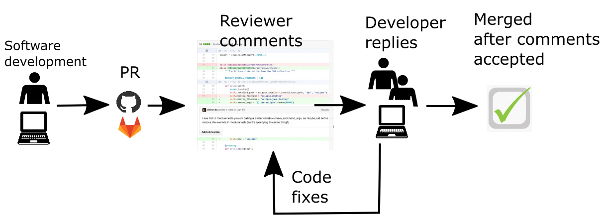
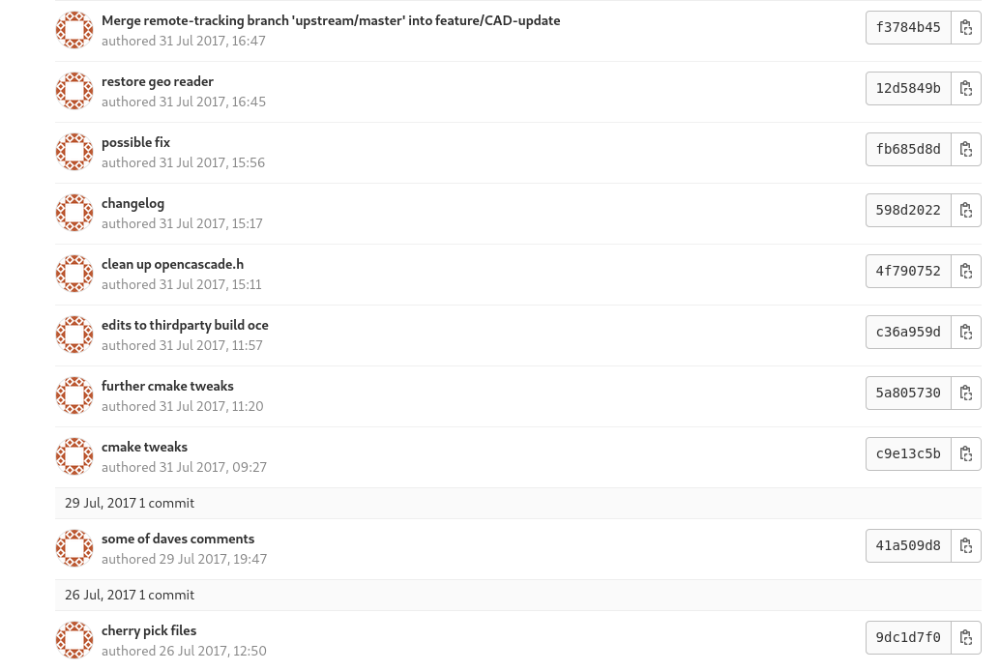

Investing in code reviews for better research software
Thibault Lestang
Dominik Krzemiński
Valerio Maggio
Part 0
What is a code review?

Code review?
Main benefits:
Catching bugs
Ensuring quality standard
Spreading knowledge
Training new developers

Not a peer review for code
- Code review throughout the research process:
- Frequent
- Informal
- Low stakes
- Commonly referred as “Modern Code Review” in the SE literature. Bachelli and Bird 2013
- Can be asynchronous (GitHub’s Pull Requests) or synchronous (in person chat).
CODECHECK

From formal inspections to code review

Asynchronous Code Review

Synchronous Code Review

Elise Özalp, Yaxin, Defne Ozan, Daniel Kelshaw (https://magrilab.ae.ic.ac.uk), Thibault Lestang. Photo cred: Neil Montague.
Department of Aeronautics, Imperial College London
Two contexts
- Individual developers writing their own specific software.
- Developers collaborating on a common codebase.
- Code review as gatekeeping.
Research on code reviews
Modern Code Review: A Case Study at Google (Sadowski, 2018)
Expectations, Outcomes, and Challenges of Modern Code Review (Bacchelli and Bird, 2013)
Code Reviewing in the Trenches: Understanding Challenges and Best Practices (McLeod et al, 2017)
Code review by and for scientists (Petre & Wilson, 2014)
Part 1
Benefits of code reviews for research software
Code review for software quality
- Defects
- Code improvements

Code review for software quality

Code reviews for understandability
More often than not source code is the only available form of documentation.
Understandability is key for code reuse and transparency.
Code reviews for team awareness
- Continuous knowledge exchange.
- Enhanced collaboration.
- Longer term resilience of project(s) (Bus factor!).
Code reviews for team awareness
Elise Özalp, Yaxin, Defne Ozan, Daniel Kelshaw (https://magrilab.ae.ic.ac.uk), Thibault Lestang. Photo cred: Neil Montague.
Department of Aeronautics, Imperial College London
Code reviews for knowledge transfer
Code review is peer learning.
- Spread of good practices.
- Homogeneisation of styles and practices.
Part 2: Challenges
A lot of good practices around…
…but what about research software?
Code review is time and energy
Two complementary courses of actions:
- Regularly reflect on process and follow trusted practices.
- Acknowledge code review as a worthy investment:
- “middle-term” benefits for individuals.
- Short and long term benefits for collectives.
Large return on investment
Being protective about code
- There can be some unhealthy competition going on.
- A large number of researchers feel shy about their coding practices:
- Lack of training.
- Other priorities, often structural (e.g. funding).
- Why would I share my code if nobody else does?
Code review can put software (back?) at the heart of the collaborative scientific process.
Strong heterogeneity among team members
- Experience.
- Skills (e.g. programming languages).
- Interest & motivation.
Other challenges
- Finding reviewers.
- Finding guidance or mentors.
Part 3: Code review good practices
A lot of the good practices from software engineering industry are applicable, with a pinch of salt.
Keep it short
3 times 30’ instead of one time 90’
- Fit in a busy schedule.
- Doesn’t feel like a big commitment.
- Code review can be a very demanding activity.
Remember that software is often not the primary driver.
Avoid comfort mode
That doesn’t look right but I guess that’s okay…
I just must have missed something…
In code review meetings, authors should make is easy for reviewers to interject.
The author’s part
The author’s part

The author’s part
- Keep it small! (~30’).
- Provide a description of the purpose and structure of the code.
- Think ahead what reviewers will and will not be familiar with
- Specific libraries?
- Specific domain knowledge?
- Ensure minimum quality standard (e.g. style, naming).
As a reviewer, think from your reviewer(s)’ perspective.
Specify the feedback you are after
I’m not happy with this loop
for i in `seq 1 $NUMOFFIG`
do
FIG=$(ls $IMDIR | head -n $i | tail -n 1)
echo " ${placeholderpath}/${FIG}" >> $FILE
doneI’m having to define a lot of classes that don’t do much, what do you think of my design?
I don’t have any specific issue in mind, but I’m curious to see whether or not you find it hard to to follow the code’s logic.
Define (and enforce) a scope
Example default scope: understandability
- Obscure variable names.
- Complex conditionals.
- Duplicated code.
- Long parameter lists.
- Shallow modules.
Standard compliance.Performance sinks.Security concerns.
Default scope can be overrriden at will.
Whether “it works” or not is irrelevant
- Code review is not an evaluation of a finished product.
- It is more rewarding to look at code that is WIP.
- The only expectation is that code is readable by reviewers.
Make it formal – but safe
Code review is more effective with a clear process (formal)
At the same time, Code review must occur within an inclusive and supporting space.
It’s about creating an environment where people feel confident about discussing their code with each other.
Overheard in the next meeting room
Author: This loop I wrote looks too complicated to me.
Reviewer: Hmmm yes. You could just use a pipe and
xargs.
Author: What’s xargs?
Reviewer: It’s basically mapping a command over a set of inputs - think functional programming!
Author: …
Reviewer: Alhtough you could also do the same thing with
sed.
Author (looking frustrated): I have no idea what you’re talking about.
All feedback isn’t helpful
…at least for now.
Reviewers with more programming experience/enthusiasm must be careful not to overwhelm beginners.
Use a checklist
- Poor formatting.
- Dead code.
- Missing documentation.
- Obscure names.
- Complex conditionals.
- Obscure one-liners.
- Duplicated code.
- Long procedures.
- Long parameter lists.
- Global state.
- Abuse of primitive types.
- Data clumps.
- …
Critique the code, not the programmer
You clearly made little effort in naming things…
You should name this differently
This doesn’t make sense
Giving feedback is not trivial
- Own you opinions.
- Make it about the code.
- Be specific.
- Suggest an alternative.
This name doesn’t make sense
I think this function’s purpose would be much clearer if it was
given a more explicit name.. perhaps
apply_bwd_transform?
Code review is both technical and social
Code reviews can drive both inclusion and exclusion.
A bad reviewer tries to force their preference on you. A good code reviewer makes your code conform to certain principles, but not opinion. (Quote from survey participant from Greiler, 2016)
Define (and refine) a policy
- Well defined process.
- Default scope.
- Moderator(s).
- Code of conduct.
- Conflict resolution.
A culture of openess and collaboration
- Components of a successful software project are
- Code
- People
- Communication
- Research code review goes along with collective ownersip of research project.
Code Review at Anaconda
Code Review at Anaconda
(Asynch) Code Review plays a huge role in Anaconda
Code review is a standard practice in all projects being used to:
- Enforce Team collaboration
- Provide a welcoming and friendly onboarding for
newcomers
- Guarantee Software compliance (audit)
- Code Review sets and (easily) adapts differently depending on specific Projects requirements
The type of the team is very important, for example:
- All IT-experts; IT people w/ diff experience or backgrounds; IT & non-IT people..
Code Review at Anaconda
(Author’s Checklist)
Always communicate up-front changes to an existing code base, i.e. Open an Issue in the repo
- This also works well because GH allows to refer & close related issues in a PR
- Helps also with changes already discussed / in progress
For new-comers:
- Always start with small and self-contained things to easily get into the project and the process
Code Review in Anaconda
(Reviewer’s Checklist)
- TOP of the list: Being considerate; giving recommendations, and motivations (why!)
Code Review is mostly based on integration and (generally) non-functional requirements:
Check that (design) concepts are not broken (e.g. APIs);
All changes are supported by automated tests;
Code organisation is compliant with project structure;
concistency (code and data) is respected wrt. to the project;
Suggest more efficient // Pythonic implementations (if any)
- Ignore all things that could be automated, e.g. via linters.
Thank you!
Questions?